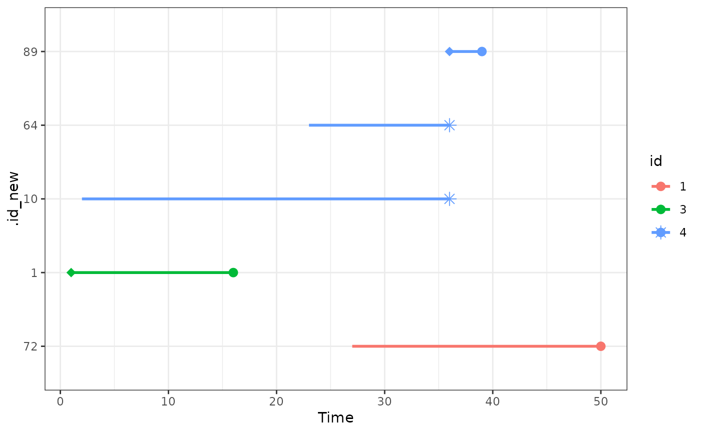

Plot the time under observation for ids in a match_time object
plot_timeline.RdGiven a match_time object created using the match_time function, this plot_timeline function displays the time under observation of ids in relation to an event added using the add_outcome function. This function may be used to visually explain the matching process or the used censoring method.
Usage
plot_timeline(x, include, id_type=x$id, time_name,
status_name, treat_point=TRUE,
outcome_point=TRUE, next_treat_point=TRUE,
linetype="solid", linewidth=1,
size=3, shape_treat=18, shape_outcome=16,
shape_next_treat=8, xlab="Time",
ylab=".id_new", legend.position="right",
gg_theme=ggplot2::theme_bw(), warn=TRUE)Arguments
- x
A
match_timeobject created using thematch_timefunction.- include
An optional numeric vector of ids that should be displayed in the plot. If this argument is not specified, the timelines for all
.id_newin the matched data will be displayed. Even for small sample sizes this might not be the best option, which is why a warning message is returned by default ifwarn=TRUE. Which of the three possible ids inx$datashould be used should be specified using theid_typeargument.- id_type
There are three id variables in
x$data:x$id(the original person identifier),.id_new(an id identifying separate rows in the final matched data) and.id_pair(an id identifying the matched pairs). By specifying this argument, users can choose which ids theincludeargument refers to. The y-axis will always display the.id_newid, but the plot will only include the ids mentioned inincludeof typeid_type.- time_name
A single character string, specifying the name of a time-to-event variable added to
xusing theadd_outcomefunction. This event time will be used as the end of the id specific timeline.- status_name
A single character string, specifying the name of the status of a time-to-event variable added to
xusing theadd_outcomefunction.- treat_point
Either
TRUEorFALSE, specifying whether a point should be added whenever a person received the treatment at inclusion time (essentially marking all cases).- outcome_point
Either
TRUEorFALSE, specifying whether a point should be added whenever a person experiences an event.- next_treat_point
Either
TRUEorFALSE, specifying whether a point should be added whenever a person receives the treatment after being included during the matching process.- linetype
A single character string specifying the linetype of the displayed lines.
- linewidth
A single number specifying the width of the displayed lines.
- size
A single number specifying the size of the drawn points (if any).
- shape_treat
The shape of the point drawn if
treat_point=TRUE.- shape_outcome
The shape of the point drawn if
outcome_point=TRUE.- shape_next_treat
The shape of the point drawn if
next_treat_point=TRUE.- xlab
A single character string specifying the label of the x-axis.
- ylab
A single character string specifying the label of the y-axis.
- legend.position
A single character string specifying the position of the label.
- gg_theme
A
ggplot2theme to be added to the plot.- warn
Either
TRUEorFALSE, specifying whether a warning should be printed ifincludeis not specified.
Details
The displayed timelines always start at the "time-zero" defined by the matching process (.treat_time in x$data). How far the lines extend depends on the argument used when calling the add_outcome function.
Examples
library(data.table)
library(MatchTime)
# only execute if packages are available
if (requireNamespace("survival") & requireNamespace("ggplot2") &
requireNamespace("MatchIt")) {
library(survival)
library(ggplot2)
library(MatchIt)
# set random seed to make the output replicably
set.seed(1234)
# load "heart" data from survival package
data("heart")
# perform nearest neighbor time-dependent matching on "age" and "surgery"
# (plus exact matching on time)
out <- match_time(transplant ~ age + surgery, data=heart, id="id",
match_method="nearest", replace_over_t=TRUE)
# suppose we had an extra dataset with events that looks like this
# NOTE: these are not all events in the real "heart" data and is merely used
# for showcasing the functionality of add_outcome()
d_events <- data.table(id=c(1, 2, 3, 4, 5, 6, 7, 8, 9, 10),
time=c(50, 6, 16, 39, 18, 3, 675, 40, 85, 58))
# add the outcome to the match_time object
out <- add_outcome(out, data=d_events, time="time", censor_at_treat=TRUE)
# plot the timeline for the original ids
# NOTE: here we see that id = 4 occurs 3 times in the matched dataset
# 1.) as a case, starting from ~ t = 36 (.id_new = 89)
# 2.) as a control, starting from ~ t = 23 (.id_new = 63)
# 3.) as a control, starting from ~ t = 2 (.id_new = 5)
# This is possible because replace_over_t=TRUE was used
plot_timeline(out, include=c(1, 2, 3, 4, 5),
time_name=".event_time", status_name=".status")
}
#> Warning: glm.fit: algorithm did not converge
#> Warning: glm.fit: fitted probabilities numerically 0 or 1 occurred
#> Warning: glm.fit: fitted probabilities numerically 0 or 1 occurred
#> Warning: glm.fit: algorithm did not converge
#> Warning: glm.fit: fitted probabilities numerically 0 or 1 occurred
#> Warning: glm.fit: algorithm did not converge
#> Warning: glm.fit: fitted probabilities numerically 0 or 1 occurred
#> Warning: glm.fit: algorithm did not converge
#> Warning: glm.fit: fitted probabilities numerically 0 or 1 occurred
#> Warning: glm.fit: algorithm did not converge
#> Warning: glm.fit: fitted probabilities numerically 0 or 1 occurred
#> Warning: glm.fit: algorithm did not converge
#> Warning: glm.fit: fitted probabilities numerically 0 or 1 occurred
